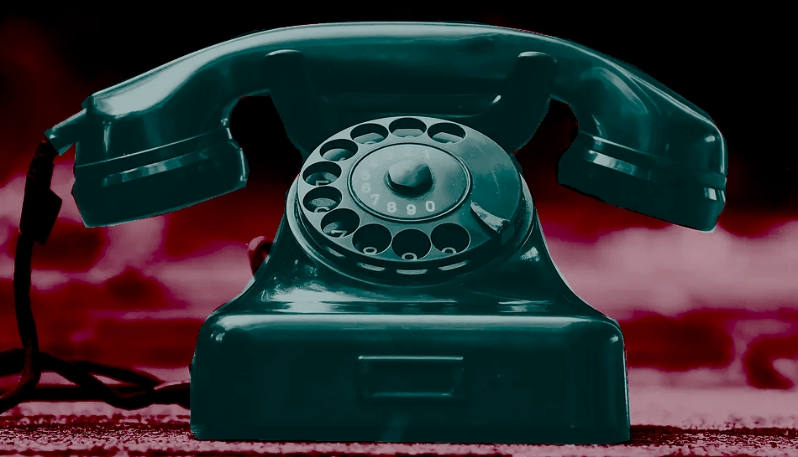

Neste exercício estudaremos o conceito de mesclagem de imagem que é semelhante ao já utilizado com gráficos vetoriais. Utilizaremos este conceito para aprender como colorir uma imagem preto e branco.
Para esta tarefa, inicie o GIMP e abra a imagem com nome Phone.png na pasta de imagens do curso. Este será o resultado do nosso trabalho:
1. Na parte Inferior Direita da tela você pode verificar o Gerenciador de Camadas, clique no ícone, Criar uma nova camada, e clique em OK.
2. Com a nova camada selecionada, utilize a Seleção Livre para criar uma área de seleção ao redor do telefone.
3. Em seguida pegue a ferramenta pincel.
4. Escolha uma cor vermelho-escuro na Barra de Ferramentas.
5. Pinte dentro da seleção, sobre o telefone.
6. Altere a cor para verde-escuro.
7. Clique no menu Seleção → Inverter.
8. Agora pinte o fundo.
9. A imagem que está na camada de baixo já deve ter desaparecido totalmente a esta altura.
10. Note que pintamos as cores de forma oposta como você viu na imagem anterior, isso foi de propósito.
11. No Gerenciador de Camadas, altere o valor de Opacidade para 60%, na camada selecionada (a que está a pintura).
12. Em Modo, escolha Subtrair.
13. Ficou legal né? Você pode ainda experimentar outros modos de mesclagem.
14. Lembre-se sempre de salvar sua imagem.
Dica: A mesclagem não precisa de transparência, quando diminuímos a opacidade apenas diminuímos a força da mesclagem!